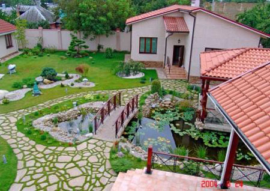
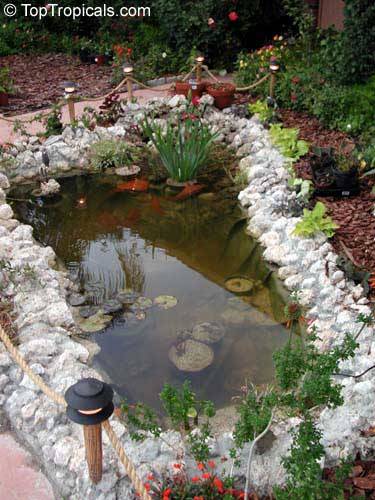
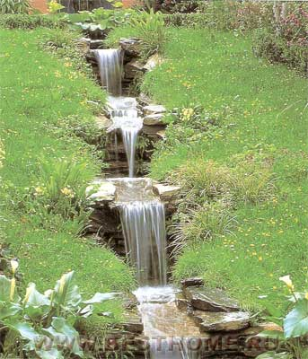
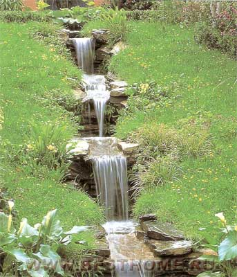
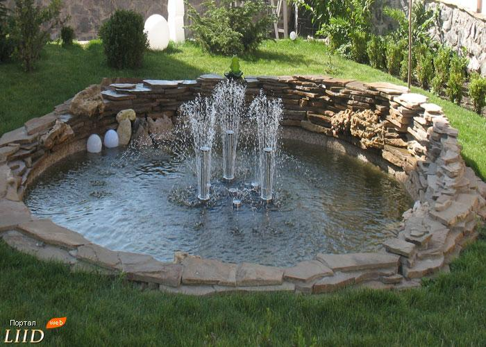
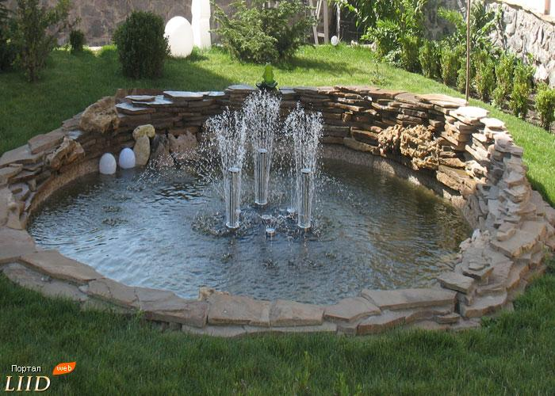
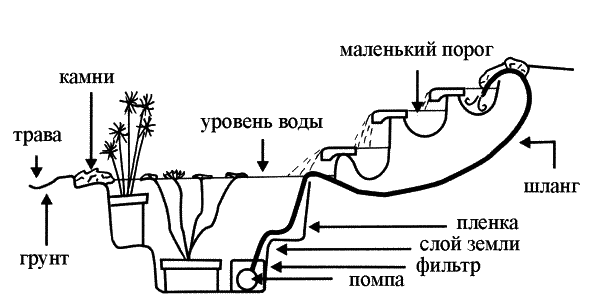

| Декоративні водойми у Чернівцях |
|
Вода, що рухається, є центром ландшафтної композиції, оскільки більш динамічний і романтичний елемент декору важко собі уявити. Так от лихо, природні струмки і джерела на присадибних ділянках – велика рідкість. А тому перед дизайнерами нерідко ставлять завдання створити штучний водний об'єкт, щоб він природно вписався в сформований ландшафт. При проектуванні виходять з існуючого рельєфу. Навіть невеликий перепад місцевості по висоті виправдує появу струмка на ділянці. А якщо на ділянці явно виражений схил або невеликий горбичок, можна не боятися переборщити з водоспадами, терасами і струмками. Власникові ділянки повезло, якщо поблизу є природна водойма, і поява струмка ще більш доречна, та й побудувати його набагато легше.
Можна виділити декілька типів водних споруд: водойми різноманітної форми зі стоячою водою (болотце, ставок), елементи з протічною водою (каскади, струмки, водоспади, фонтани), водні декоративні елементи малих форм (міні – водойми, стаціонарні і в переносних ємностях).
Ставки
 
Ставок чудово імітує куточок дикої природи. Щедра рослинність притягує до нього різноманітних мешканців. На березі ставка завжди знайдеться місце для лавочки, де можна в спокійній обстановці помилуватися загадковим водним світом.
В оформленні ділянки приймаються декілька типів ставків:
Міні водойми (в пластикових ємкостях)
   Мода на міні водойми призвела до росту популярності дрібномасштабних декоративних елементів для яких не потрібно багато місця і які можна підібрати з урахуванням загального стилю оформлення ділянки. Не менш привабливим за великий ставок виявиться невелика ємкість з плаваючими рослинами.
Струмки, водоспади
  
Створюючи струмок, важливо, по-перше, правильно його побудувати, а по-друге, вміло декорувати. Починають з підготовки ложа по природному нахилі. З різних способів формування русла найбільш часто застосовують плівковий, бетонний і склопластиковий.
Струмок являє собою неширокий потік води, маючий викривлене русло. Щоб створити його, зовсім необов’язково володіти ділянкою на схилі та мати багато місця. На рівній горизонтальній поверхні зазвичай створюють струмок рівного типу, маючий дуже викривлене русло. На ділянці з нахилом створюють гірський потік з кам’янистим руслом.
Водоспади і каскади приносять в сад шум, рух та відблиски сонячних променів на воді. Сучасні матеріали і техніка дозволяють створювати водоспади навіть на зовсім плоских ділянках.
Вода каскаді може текти спокійно в водойму чи падати з вершин альпінарію, розбиваючись об каміння на мілині.
Фонтани
   Фонтани – ефективний прийом оформлення ділянки, представлений вертикальними потоками води, що розрізняються силою напору, формою струменя, способу руху, а в сутінках і світовим рішенням.
Оформлення потоків досить багатопланове, починаючи від кам’янистих структур, з яких витікає вода, до круглих, викладених камінням майданчиків центрі яких струменять джерельця.
Рекомендації по догляду за водоймами. Найголовніше - регулярно прибирати з поверхні води опале листя, сміття, гілочки і шматочки кори. Осівши на дно, ця органіка підживлятиме водорості на зразок ряски, а нерідко й загниватиме. Якщо на поверхні води утворилася масляниста плівка, приберіть її, "пропрасувавши" всю поверхню ставка газетою. Плівка легко віддалиться.
Щоосені воду краще спускати і чистити дно водоймища.
Якщо у водоймі на зимівлю залишилися карасі, слід подумати про постачання у воду кисню. Для цього потрібно періодично робити отвори в льоду.
Слід уважно стежити за появою водоростей в штучних водоймах, особливо невеликого розміру.
Увага: при сильних дощах ставки можуть переповнюватися і заливати ділянку. Від таких «повеней» рятує дренажна яма. Яму розміром 1х1 м роблять в метрі від краю водоймища. Використовують дренажну трубку діаметром 50-70 мм. Яму заповнюють щебенем або галькою, а зверху маскують камінням. Водяний каскад. Кам'яна основа водного каскаду по своїй суті являє собою систему багаторівневих терас.  Кожна тераса повинна бути виконана у формі невеликого басейну. Висота підпірних стінок та площа ділянок, які є каскадними не обов'язково повинна бути однаковою. Якраз навпаки, різна площа створює більш приподній та цікавий вигляд. Для створення водного каскаду необхідний природній схил. Нехай він буде невеликої висоти. В решті решт, створити схил легше, ніж створювати його на рівній місцині. Поблизу від водойми не повинно бути жвавих доріг та листопадних дерев. Перед тим, як приступити до земляних робіт, необхідно перевірити, не прокладені тут підземні комунікації (електричні, водні, каналізаційні або газові) і яка глибина ґрунтових вод. При високому рівні ґрунтових вод краще вибрати інше місце для будівництва водойми. Способи будівництва водного каскаду дуже різноманітні і залежать в першу чергу від матеріалів, що використовуються. Бетон в створенні водних каскадів, гірських струмків і водоспадів використовувати непотрібно. Краще придбати невеликі готові ємності неправильної форми, або спеціальну пластикову плівку. На плівці і зупинимось. Будівництво каскаду починається зістворення ґрунтових сходинок. Кількість сходинок, їхня висота і площа залежать від дизайну водойми та смаком замовника. Наступний етап – створення котловану, вірніше, невеликих ям на кожній сходинці каскаду, починаючи з самого нижнього і закінчуючи самим верхнім. Кам’яною крихтою або садовим шлангом відмічають контур басейну і по зробленій відмітці копають яму глибиною не більше 30 см. Якщо ви плануєте заселити басейн водними рослинами і рибками, то глибину слід збільшити до 1 м. Стінки і дно ями ретельно утрамбовують, заокруглюючи краї, після чого викладають піском або торфом і накривають шматком пластикової плівки. Вертикальні поверхні ґрунтових сходинок каскаду плівкою не накривають. Розміри плівки повинні бути більшими за розміри ями на 25-45 см у всіх напрямках. Після того, коли плівка вже вистелена, дно і стінки водойми обмазують глиною і викладають річною галькою або великим річковим камінням. Перший камінь кладуть на дно, інші вкладають у бік країв басейну. Щоб не пошкодити плівку ні в якому разі не використовуйте каміння з гострими кінцями. Готову водойму наповнюють водою, аби перевірити його горизонтальність. По краях басейну поверх плівки викладають валуни. Виступаючі краї плівки згортають і прикривають камінням. Від того, яким чином ви встановите каміння на кожній сходинці каскаду, буде залежати напрямок водяного потоку.
Інколи в нижній точці роблять стічну трубу, щоб попередити виливання води з нього під час дощів.
Для того, щоб перетворити кам’ний схил з невеликими водоймами в єдиний водний каскад, необхідний водяний насос. Розміри і потужність насосу залежить від загальної висоти каскаду. Його розміщують у нижній частині водойми і приєднують до нього шланг або гнучку трубу.
|